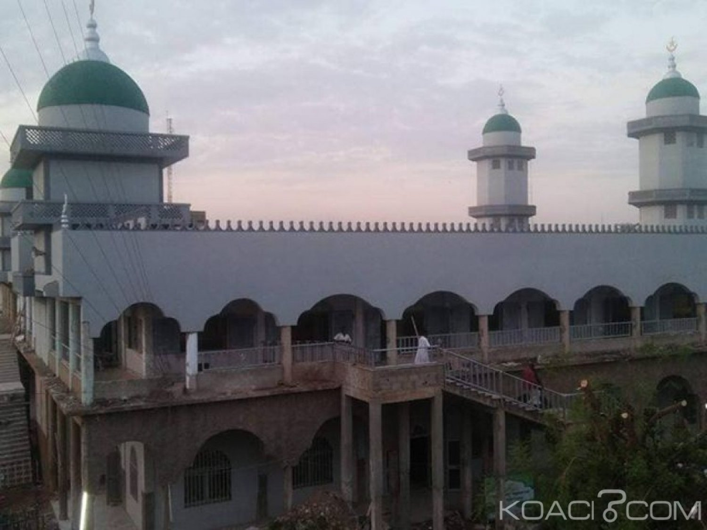

La Grande Mosquée de Fada N'Gourma est l'une des principales mosquées de la ville, située dans la région de l'Est
du Burkina Faso. Voici quelques informations générales sur cette mosquée :
Architecture et Design
- Style Architectural : La Grande Mosquée de Fada N'Gourma est typiquement construite dans un style architectural sahélien
ou soudanais, caractérisé par l'utilisation de briques de terre crue, de bois et de paille.
- Caractéristiques : Elle comprend généralement une grande cour centrale entourée de murs, avec une salle de prière
principale orientée vers La Mecque. Les minarets et les dômes peuvent être présents, ajoutant à sa silhouette distinctive.
Importance Religieuse et Culturelle
- Centre de la Communauté : La mosquée joue un rôle central dans la vie spirituelle et communautaire des musulmans de Fada N'Gourma.
- Prière et Rassemblements : Elle est utilisée pour les prières quotidiennes, les rassemblements du vendredi (Jumu'ah) et pour
des célébrations religieuses importantes tout au long de l'année.
Histoire et Contexte Local
Patrimoine Culturel : Comme beaucoup de mosquées en Afrique de l'Ouest, la Grande Mosquée de Fada N'Gourma est également
un symbole de l'histoire et de la culture islamique dans la région.
Éducation Religieuse : En plus des activités religieuses, certaines mosquées servent également de centres d'éducation
où les enfants et les jeunes peuvent apprendre les principes de l'islam ainsi que des sujets académiques.
Tourisme et Visites
Attraits Touristiques : Pour les visiteurs intéressés par l'architecture islamique et la culture locale,
la Grande Mosquée de Fada N'Gourma offre une occasion de découvrir l'artisanat traditionnel et l'ingénierie de construction
de la région.
Respect des Normes Locales : Lors de la visite d'une mosquée, il est important de respecter les normes culturelles et
religieuses locales, comme se couvrir les épaules et les genoux, et retirer ses chaussures avant d'entrer dans la salle de prière.
En résumé, Grande Mosquée de Fada N'Gourma est non seulement un lieu de culte mais aussi un pilier de la communauté musulmane locale, symbolisant l'histoire, la foi et l'identité culturelle de la région de l'Est du Burkina Faso.
